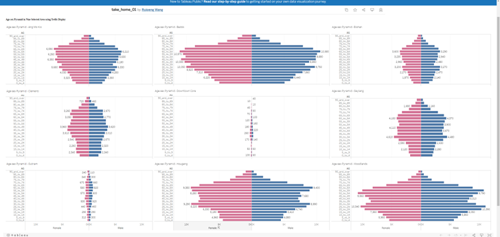
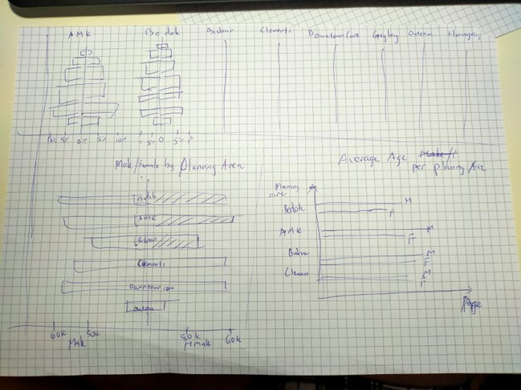
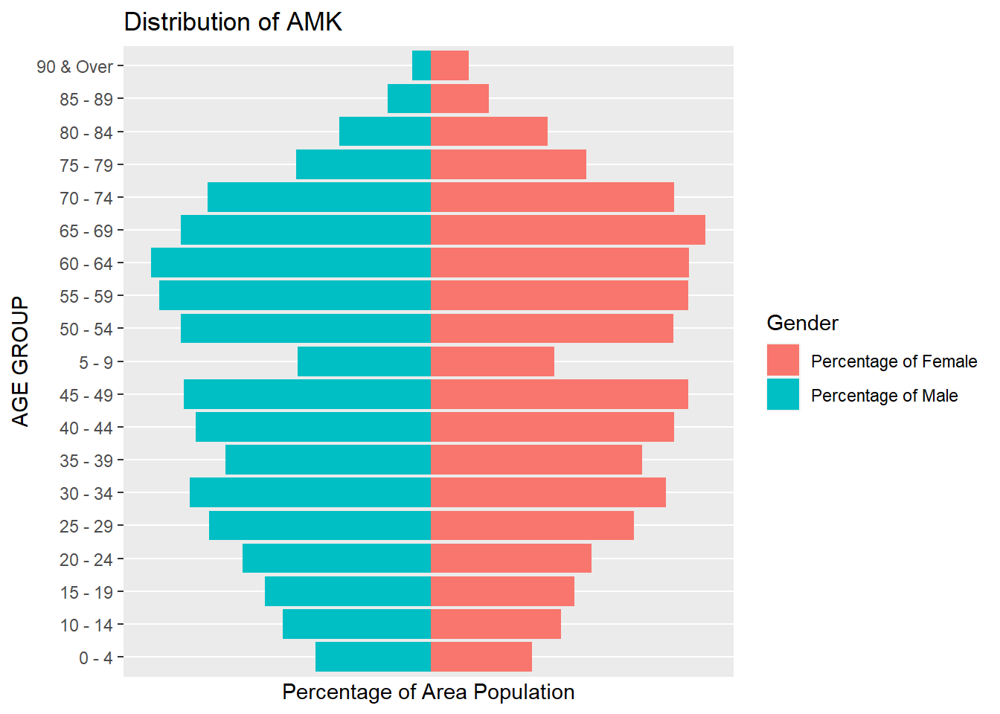

pacman::p_load(tidyverse)
pacman::p_load(readxl)Take Home 2
The Original DataViz
In the first task, we are supposed to create Age-sex Pyramid to cover 9 planning areas of Singapore in term of Male/ Female and the age group.
Below is one of the DataViz that was created by a classmate.

Original DataViz https://public.tableau.com/app/profile/ruipeng.wang/viz/take_home_01/Dashboard1?fbclid=IwAR1xjLcdtI9B6IQsXvE8DeuHGT0Xe1sL20M6RPAZ2gvhEV_hLizpZ9QdADg
Critiques:
Clarity: The viz was created for 9 planning areas with 9 different populations. However, they use to same absolute scales in terms of number of people. Therefore, the areas with small number of populations ( Downtown Core and Outram) when putting in the same x-axis scale as other areas, does not have high enough number of people, to show case the distributions as Age-sex pyramid.
Clarity Some age groups have data labels ( number of people in that age group), however many age groups do not have any data labels. It looks like the data label are randomly assigned.
Aesthetics Age-sex pyramid of 9 area, should not occupy such big area of spaces (taking up entire horizontal dataviz). There are other designs that can save spaces for other graphs / charts that will portray more information from the data.
Propose Designs

To address the difference in term of absolute numbers of populations in different areas, we should be converting them into percentage of each age groups versus the total population of that areas, instead keeping them on the same scale of population numbers.
Should avoid individual bar labels, as there are quite a big numbers of populations. Avoid randomly labeling and it can be quite confusing
To address the aesthetics, we can use the upper half of the dashboard to showcase all 9 age-sex pyramid of the areas, and using the other spaces for other graphs that can showcase more information from the same data.
Creating Age-sex pyramid using ggplot2
amk_data <- read_excel("Singapore Residents by Planning Area, Subzone, Age Group, Sex and Type of Dwelling, June 2022.xlsx", sheet = "AMK")
head(amk_data)# A tibble: 6 × 4
`Row Labels` `AGE GROUP` `Population Perc` ID
<chr> <chr> <dbl> <chr>
1 Ang Mo Kio 0 - 4 -0.0332 Percentage of Male
2 Ang Mo Kio 5 - 9 -0.0385 Percentage of Male
3 Ang Mo Kio 10 - 14 -0.0428 Percentage of Male
4 Ang Mo Kio 15 - 19 -0.0478 Percentage of Male
5 Ang Mo Kio 20 - 24 -0.0544 Percentage of Male
6 Ang Mo Kio 25 - 29 -0.0640 Percentage of Maleggplot(amk_data,
aes( x = amk_data$`Population Perc` , y = amk_data$`AGE GROUP` , fill = amk_data$ID ))+
geom_bar(stat = "identity") +
ggtitle("Distribution of AMK")+
ylab("AGE GROUP")+
xlab("Percentage of Area Population") +
scale_x_continuous(breaks = round(seq(min(amk_data$`Population Perc`), max(amk_data$`Population Perc`), by = 0.5),1)) +
labs(fill='Gender') Warning: Use of `` amk_data$`Population Perc` `` is discouraged.
ℹ Use `Population Perc` instead.Warning: Use of `` amk_data$`AGE GROUP` `` is discouraged.
ℹ Use `AGE GROUP` instead.Warning: Use of `amk_data$ID` is discouraged.
ℹ Use `ID` instead.